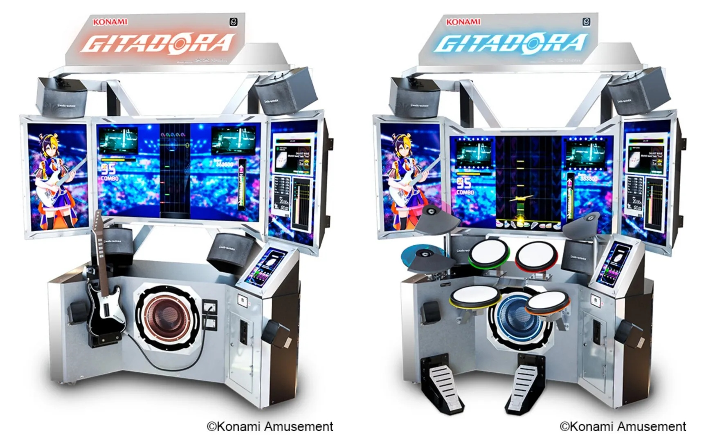

BEMANI 시리즈의 일원으로, 기타프릭스와 드럼매니아를 묶어부르는 명칭이다.
기타프릭스와 드럼매니아는 서로 대단히 밀접한 관계를 맺고 있기 때문에, 이 두 게임을 묶어서 하나의 시리즈로 취급하는 경우가 아주 많다.

각각 좌측은 기타프릭스, 우측은 드럼매니아 기체.
기타 3/드럼 2까지는 극도 컨셉도 각자 다른 별개의 시리즈였으나, 기타 4/드럼 3부터 곡과 컨셉을 모두 공유하게 되었다.
GITADORA 시리즈에서는 아예 '기타도라'라는 한 시리즈 아래에 '기타도라 드럼매니아', '기타도라 기타프릭스'가 있는 형태로 완전히 통합되었다.
클래식(~th)/V 시리즈는 2011년 발매된 V8로 종료되었고, 이후는 XG 시리즈로 계승되었으며, 2013년 GITADORA 시리즈로 한 번 리부트하여 오늘에 이르고 있다. 참고로 코나미에서는 비트매니아 시리즈와는 달리 공식적으로 클래식, XG, GITADORA 전부 동일 시리즈로 보고 있다.